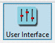

Écran d’accueil
Affichage initial
Vous avez peut-être choisi de démarrer OpenCPN à la fin de l’installation. Si vous ne démarrez pas le programme maintenant. Un écran de ce type vous sera présenté :

Les zones de contrôle sont affichées à l’écran. De nombreuses options seront expliquées plus tard. Ce manuel met l’accent sur les options nécessaires à une utilisation de base.
-
Barre d’outils
Hamburger  Dans la barre d’outils, le symbole 'Hamburger' plie/déplie la barre d’outils.
Dans la barre d’outils, le symbole 'Hamburger' plie/déplie la barre d’outils.
-
Options d’affichage
Hamburger  Le panneau des cartes 'hamburger' ouvre/ferme le panneau pour afficher un certain nombre d’options.
Le panneau des cartes 'hamburger' ouvre/ferme le panneau pour afficher un certain nombre d’options.
-
Indicateurs, Nord de la carte/état du GPS : Voir
-
Barre d’état
|
Réglages ECDIS intérieur
Il est important que l’affichage soit configuré comme décrit dans la section suivante. |
Options particulières pour les cartes Inland ECDIS
Options Personnaliser 
Cocher cette case pour Utiliser le système Inland ECDIS
Appliquer OK

L’affichage est en mode "Nuit" dans le mode d’éclairage.
Pour revenir au mode "Jour" d’éclairage Choisir l’affichage : Jour, Crépuscule, Nuit, Aube Les couleurs de la nuit, du crépuscule et de la lumière du jour.
Vitesses et distances sont en km/h et km/mètres dans le mode iECDIS

A chaque démarrage d’OpenCPN, l’affichage est en mode nuit et nécessite d’être changé. La barre d’util nécessite d’être déplacée par glisser/déposer sur le côté de la zone de carte.